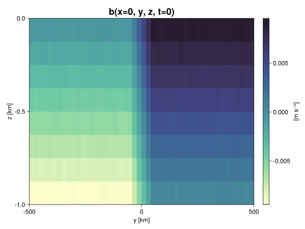
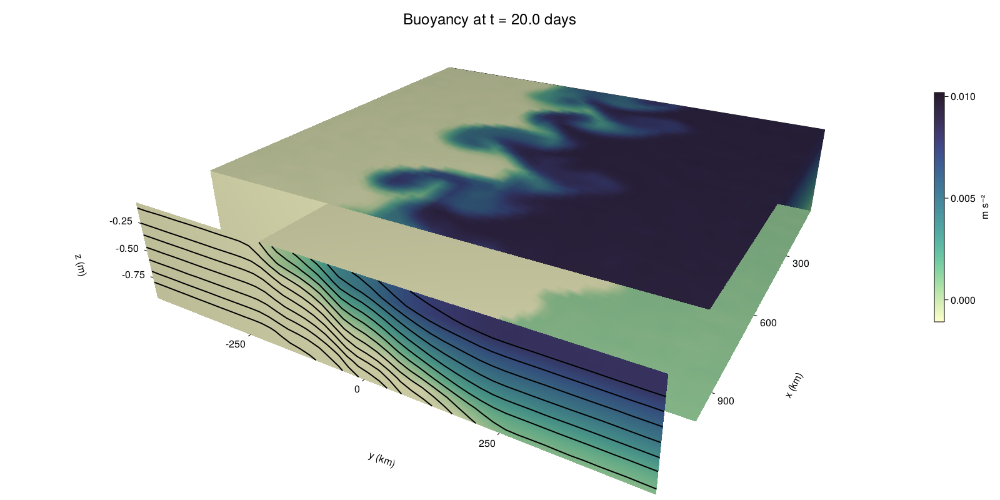

Baroclinic adjustment
In this example, we simulate the evolution and equilibration of a baroclinically unstable front.
Install dependencies
First let's make sure we have all required packages installed.
using Pkg
pkg"add Oceananigans, CairoMakie"using Oceananigans
using Oceananigans.UnitsGrid
We use a three-dimensional channel that is periodic in the x direction:
Lx = 1000kilometers # east-west extent [m]
Ly = 1000kilometers # north-south extent [m]
Lz = 1kilometers # depth [m]
grid = RectilinearGrid(size = (48, 48, 8),
x = (0, Lx),
y = (-Ly/2, Ly/2),
z = (-Lz, 0),
topology = (Periodic, Bounded, Bounded))48×48×8 RectilinearGrid{Float64, Periodic, Bounded, Bounded} on CPU with 3×3×3 halo
├── Periodic x ∈ [0.0, 1.0e6) regularly spaced with Δx=20833.3
├── Bounded y ∈ [-500000.0, 500000.0] regularly spaced with Δy=20833.3
└── Bounded z ∈ [-1000.0, 0.0] regularly spaced with Δz=125.0Model
We built a HydrostaticFreeSurfaceModel with an ImplicitFreeSurface solver. Regarding Coriolis, we use a beta-plane centered at 45° South.
model = HydrostaticFreeSurfaceModel(; grid,
coriolis = BetaPlane(latitude = -45),
buoyancy = BuoyancyTracer(),
tracers = :b,
momentum_advection = WENO(),
tracer_advection = WENO())HydrostaticFreeSurfaceModel{CPU, RectilinearGrid}(time = 0 seconds, iteration = 0)
├── grid: 48×48×8 RectilinearGrid{Float64, Periodic, Bounded, Bounded} on CPU with 3×3×3 halo
├── timestepper: QuasiAdamsBashforth2TimeStepper
├── tracers: b
├── closure: Nothing
├── buoyancy: BuoyancyTracer with ĝ = NegativeZDirection()
├── free surface: ImplicitFreeSurface with gravitational acceleration 9.80665 m s⁻²
│ └── solver: FFTImplicitFreeSurfaceSolver
└── coriolis: BetaPlane{Float64}We start our simulation from rest with a baroclinically unstable buoyancy distribution. We use ramp(y, Δy), defined below, to specify a front with width Δy and horizontal buoyancy gradient M². We impose the front on top of a vertical buoyancy gradient N² and a bit of noise.
"""
ramp(y, Δy)
Linear ramp from 0 to 1 between -Δy/2 and +Δy/2.
For example:
```
y < -Δy/2 => ramp = 0
-Δy/2 < y < -Δy/2 => ramp = y / Δy
y > Δy/2 => ramp = 1
```
"""
ramp(y, Δy) = min(max(0, y/Δy + 1/2), 1)
N² = 1e-5 # [s⁻²] buoyancy frequency / stratification
M² = 1e-7 # [s⁻²] horizontal buoyancy gradient
Δy = 100kilometers # width of the region of the front
Δb = Δy * M² # buoyancy jump associated with the front
ϵb = 1e-2 * Δb # noise amplitude
bᵢ(x, y, z) = N² * z + Δb * ramp(y, Δy) + ϵb * randn()
set!(model, b=bᵢ)Let's visualize the initial buoyancy distribution.
using CairoMakie
# Build coordinates with units of kilometers
x, y, z = 1e-3 .* nodes(grid, (Center(), Center(), Center()))
b = model.tracers.b
fig, ax, hm = heatmap(y, z, interior(b)[1, :, :],
colormap=:deep,
axis = (xlabel = "y [km]",
ylabel = "z [km]",
title = "b(x=0, y, z, t=0)",
titlesize = 24))
Colorbar(fig[1, 2], hm, label = "[m s⁻²]")
fig
Simulation
Now let's build a Simulation.
simulation = Simulation(model, Δt=20minutes, stop_time=20days)Simulation of HydrostaticFreeSurfaceModel{CPU, RectilinearGrid}(time = 0 seconds, iteration = 0)
├── Next time step: 20 minutes
├── Elapsed wall time: 0 seconds
├── Wall time per iteration: NaN days
├── Stop time: 20 days
├── Stop iteration : Inf
├── Wall time limit: Inf
├── Callbacks: OrderedDict with 4 entries:
│ ├── stop_time_exceeded => Callback of stop_time_exceeded on IterationInterval(1)
│ ├── stop_iteration_exceeded => Callback of stop_iteration_exceeded on IterationInterval(1)
│ ├── wall_time_limit_exceeded => Callback of wall_time_limit_exceeded on IterationInterval(1)
│ └── nan_checker => Callback of NaNChecker for u on IterationInterval(100)
├── Output writers: OrderedDict with no entries
└── Diagnostics: OrderedDict with no entriesWe add a TimeStepWizard callback to adapt the simulation's time-step,
wizard = TimeStepWizard(cfl=0.2, max_change=1.1, max_Δt=20minutes)
simulation.callbacks[:wizard] = Callback(wizard, IterationInterval(20))Callback of TimeStepWizard(cfl=0.2, max_Δt=1200.0, min_Δt=0.0) on IterationInterval(20)Also, we add a callback to print a message about how the simulation is going,
using Printf
wall_clock = Ref(time_ns())
function print_progress(sim)
u, v, w = model.velocities
progress = 100 * (time(sim) / sim.stop_time)
elapsed = (time_ns() - wall_clock[]) / 1e9
@printf("[%05.2f%%] i: %d, t: %s, wall time: %s, max(u): (%6.3e, %6.3e, %6.3e) m/s, next Δt: %s\n",
progress, iteration(sim), prettytime(sim), prettytime(elapsed),
maximum(abs, u), maximum(abs, v), maximum(abs, w), prettytime(sim.Δt))
wall_clock[] = time_ns()
return nothing
end
simulation.callbacks[:print_progress] = Callback(print_progress, IterationInterval(100))Callback of print_progress on IterationInterval(100)Diagnostics/Output
Here, we save the buoyancy, $b$, at the edges of our domain as well as the zonal ($x$) average of buoyancy.
u, v, w = model.velocities
ζ = ∂x(v) - ∂y(u)
B = Average(b, dims=1)
U = Average(u, dims=1)
V = Average(v, dims=1)
filename = "baroclinic_adjustment"
save_fields_interval = 0.5day
slicers = (east = (grid.Nx, :, :),
north = (:, grid.Ny, :),
bottom = (:, :, 1),
top = (:, :, grid.Nz))
for side in keys(slicers)
indices = slicers[side]
simulation.output_writers[side] = JLD2OutputWriter(model, (; b, ζ);
filename = filename * "_$(side)_slice",
schedule = TimeInterval(save_fields_interval),
overwrite_existing = true,
indices)
end
simulation.output_writers[:zonal] = JLD2OutputWriter(model, (; b=B, u=U, v=V);
filename = filename * "_zonal_average",
schedule = TimeInterval(save_fields_interval),
overwrite_existing = true)JLD2OutputWriter scheduled on TimeInterval(12 hours):
├── filepath: ./baroclinic_adjustment_zonal_average.jld2
├── 3 outputs: (b, u, v)
├── array type: Array{Float64}
├── including: [:grid, :coriolis, :buoyancy, :closure]
└── max filesize: Inf YiBNow we're ready to run.
@info "Running the simulation..."
run!(simulation)
@info "Simulation completed in " * prettytime(simulation.run_wall_time)[ Info: Running the simulation...
[ Info: Initializing simulation...
[00.00%] i: 0, t: 0 seconds, wall time: 37.491 seconds, max(u): (0.000e+00, 0.000e+00, 0.000e+00) m/s, next Δt: 20 minutes
[ Info: ... simulation initialization complete (25.998 seconds)
[ Info: Executing initial time step...
[ Info: ... initial time step complete (24.105 seconds).
[06.94%] i: 100, t: 1.389 days, wall time: 1.186 minutes, max(u): (1.260e-01, 1.157e-01, 1.545e-03) m/s, next Δt: 20 minutes
[13.89%] i: 200, t: 2.778 days, wall time: 25.927 seconds, max(u): (2.119e-01, 1.792e-01, 1.771e-03) m/s, next Δt: 20 minutes
[20.83%] i: 300, t: 4.167 days, wall time: 25.479 seconds, max(u): (2.818e-01, 2.809e-01, 1.803e-03) m/s, next Δt: 20 minutes
[27.78%] i: 400, t: 5.556 days, wall time: 25.273 seconds, max(u): (3.673e-01, 4.471e-01, 2.027e-03) m/s, next Δt: 20 minutes
[34.72%] i: 500, t: 6.944 days, wall time: 25.539 seconds, max(u): (4.721e-01, 6.733e-01, 2.318e-03) m/s, next Δt: 20 minutes
[41.67%] i: 600, t: 8.333 days, wall time: 25.864 seconds, max(u): (6.548e-01, 1.008e+00, 3.410e-03) m/s, next Δt: 20 minutes
[48.61%] i: 700, t: 9.722 days, wall time: 26.339 seconds, max(u): (1.065e+00, 1.068e+00, 4.432e-03) m/s, next Δt: 20 minutes
[55.56%] i: 800, t: 11.111 days, wall time: 26.049 seconds, max(u): (1.255e+00, 1.212e+00, 4.250e-03) m/s, next Δt: 20 minutes
[62.50%] i: 900, t: 12.500 days, wall time: 25.486 seconds, max(u): (1.451e+00, 1.229e+00, 4.409e-03) m/s, next Δt: 20 minutes
[69.44%] i: 1000, t: 13.889 days, wall time: 25.827 seconds, max(u): (1.333e+00, 1.197e+00, 3.407e-03) m/s, next Δt: 20 minutes
[76.39%] i: 1100, t: 15.278 days, wall time: 25.463 seconds, max(u): (1.349e+00, 1.017e+00, 2.686e-03) m/s, next Δt: 20 minutes
[83.33%] i: 1200, t: 16.667 days, wall time: 26.648 seconds, max(u): (1.100e+00, 9.598e-01, 3.141e-03) m/s, next Δt: 20 minutes
[90.28%] i: 1300, t: 18.056 days, wall time: 25.505 seconds, max(u): (1.097e+00, 1.224e+00, 3.279e-03) m/s, next Δt: 20 minutes
[97.22%] i: 1400, t: 19.444 days, wall time: 25.403 seconds, max(u): (1.230e+00, 1.335e+00, 3.290e-03) m/s, next Δt: 20 minutes
[ Info: Simulation is stopping after running for 7.107 minutes.
[ Info: Simulation time 20 days equals or exceeds stop time 20 days.
[ Info: Simulation completed in 7.114 minutes
Visualization
All that's left is to make a pretty movie. Actually, we make two visualizations here. First, we illustrate how to make a 3D visualization with Makie's Axis3 and Makie.surface. Then we make a movie in 2D. We use CairoMakie in this example, but note that using GLMakie is more convenient on a system with OpenGL, as figures will be displayed on the screen.
using CairoMakieThree-dimensional visualization
We load the saved buoyancy output on the top, bottom, north, and east surface as FieldTimeSerieses.
filename = "baroclinic_adjustment"
sides = keys(slicers)
slice_filenames = NamedTuple(side => filename * "_$(side)_slice.jld2" for side in sides)
b_timeserieses = (east = FieldTimeSeries(slice_filenames.east, "b"),
north = FieldTimeSeries(slice_filenames.north, "b"),
bottom = FieldTimeSeries(slice_filenames.bottom, "b"),
top = FieldTimeSeries(slice_filenames.top, "b"))
B_timeseries = FieldTimeSeries(filename * "_zonal_average.jld2", "b")
times = B_timeseries.times
grid = B_timeseries.grid48×48×8 RectilinearGrid{Float64, Periodic, Bounded, Bounded} on CPU with 3×3×3 halo
├── Periodic x ∈ [0.0, 1.0e6) regularly spaced with Δx=20833.3
├── Bounded y ∈ [-500000.0, 500000.0] regularly spaced with Δy=20833.3
└── Bounded z ∈ [-1000.0, 0.0] regularly spaced with Δz=125.0We build the coordinates. We rescale horizontal coordinates to kilometers.
xb, yb, zb = nodes(b_timeserieses.east)
xb = xb ./ 1e3 # convert m -> km
yb = yb ./ 1e3 # convert m -> km
Nx, Ny, Nz = size(grid)
x_xz = repeat(x, 1, Nz)
y_xz_north = y[end] * ones(Nx, Nz)
z_xz = repeat(reshape(z, 1, Nz), Nx, 1)
x_yz_east = x[end] * ones(Ny, Nz)
y_yz = repeat(y, 1, Nz)
z_yz = repeat(reshape(z, 1, Nz), grid.Ny, 1)
x_xy = x
y_xy = y
z_xy_top = z[end] * ones(grid.Nx, grid.Ny)
z_xy_bottom = z[1] * ones(grid.Nx, grid.Ny)Then we create a 3D axis. We use zonal_slice_displacement to control where the plot of the instantaneous zonal average flow is located.
fig = Figure(resolution = (1600, 800))
zonal_slice_displacement = 1.2
ax = Axis3(fig[2, 1],
aspect=(1, 1, 1/5),
xlabel = "x (km)",
ylabel = "y (km)",
zlabel = "z (m)",
xlabeloffset = 100,
ylabeloffset = 100,
zlabeloffset = 100,
limits = ((x[1], zonal_slice_displacement * x[end]), (y[1], y[end]), (z[1], z[end])),
elevation = 0.45,
azimuth = 6.8,
xspinesvisible = false,
zgridvisible = false,
protrusions = 40,
perspectiveness = 0.7)Axis3()We use data from the final savepoint for the 3D plot. Note that this plot can easily be animated by using Makie's Observable. To dive into Observables, check out Makie.jl's Documentation.
n = length(times)41Now let's make a 3D plot of the buoyancy and in front of it we'll use the zonally-averaged output to plot the instantaneous zonal-average of the buoyancy.
b_slices = (east = interior(b_timeserieses.east[n], 1, :, :),
north = interior(b_timeserieses.north[n], :, 1, :),
bottom = interior(b_timeserieses.bottom[n], :, :, 1),
top = interior(b_timeserieses.top[n], :, :, 1))
# Zonally-averaged buoyancy
B = interior(B_timeseries[n], 1, :, :)
clims = 1.1 .* extrema(b_timeserieses.top[n][:])
kwargs = (colorrange=clims, colormap=:deep)
surface!(ax, x_yz_east, y_yz, z_yz; color = b_slices.east, kwargs...)
surface!(ax, x_xz, y_xz_north, z_xz; color = b_slices.north, kwargs...)
surface!(ax, x_xy, y_xy, z_xy_bottom ; color = b_slices.bottom, kwargs...)
surface!(ax, x_xy, y_xy, z_xy_top; color = b_slices.top, kwargs...)
sf = surface!(ax, zonal_slice_displacement .* x_yz_east, y_yz, z_yz; color = B, kwargs...)
contour!(ax, y, z, B; transformation = (:yz, zonal_slice_displacement * x[end]),
levels = 15, linewidth = 2, color = :black)
Colorbar(fig[2, 2], sf, label = "m s⁻²", height = Relative(0.4), tellheight=false)
title = "Buoyancy at t = " * string(round(times[n] / day, digits=1)) * " days"
fig[1, 1:2] = Label(fig, title; fontsize = 24, tellwidth = false, padding = (0, 0, -120, 0))
rowgap!(fig.layout, 1, Relative(-0.2))
colgap!(fig.layout, 1, Relative(-0.1))
save("baroclinic_adjustment_3d.png", fig)
Two-dimensional movie
We make a 2D movie that shows buoyancy $b$ and vertical vorticity $ζ$ at the surface, as well as the zonally-averaged zonal and meridional velocities $U$ and $V$ in the $(y, z)$ plane. First we load the FieldTimeSeries and extract the additional coordinates we'll need for plotting
ζ_timeseries = FieldTimeSeries(slice_filenames.top, "ζ")
U_timeseries = FieldTimeSeries(filename * "_zonal_average.jld2", "u")
B_timeseries = FieldTimeSeries(filename * "_zonal_average.jld2", "b")
V_timeseries = FieldTimeSeries(filename * "_zonal_average.jld2", "v")
xζ, yζ, zζ = nodes(ζ_timeseries)
yv = ynodes(V_timeseries)
xζ = xζ ./ 1e3 # convert m -> km
yζ = yζ ./ 1e3 # convert m -> km
yv = yv ./ 1e3 # convert m -> km49-element Vector{Float64}:
-500.0
-479.1666666666667
-458.3333333333333
-437.5
-416.6666666666667
-395.8333333333333
-375.0
-354.1666666666667
-333.3333333333333
-312.5
-291.6666666666667
-270.8333333333333
-250.0
-229.16666666666666
-208.33333333333334
-187.5
-166.66666666666666
-145.83333333333334
-125.0
-104.16666666666667
-83.33333333333333
-62.5
-41.666666666666664
-20.833333333333332
0.0
20.833333333333332
41.666666666666664
62.5
83.33333333333333
104.16666666666667
125.0
145.83333333333334
166.66666666666666
187.5
208.33333333333334
229.16666666666666
250.0
270.8333333333333
291.6666666666667
312.5
333.3333333333333
354.1666666666667
375.0
395.8333333333333
416.6666666666667
437.5
458.3333333333333
479.1666666666667
500.0Next, we set up a plot with 4 panels. The top panels are large and square, while the bottom panels get a reduced aspect ratio through rowsize!.
set_theme!(Theme(fontsize=24))
fig = Figure(resolution=(1800, 1000))
axb = Axis(fig[1, 2], xlabel="x (km)", ylabel="y (km)", aspect=1)
axζ = Axis(fig[1, 3], xlabel="x (km)", ylabel="y (km)", aspect=1, yaxisposition=:right)
axu = Axis(fig[2, 2], xlabel="y (km)", ylabel="z (m)")
axv = Axis(fig[2, 3], xlabel="y (km)", ylabel="z (m)", yaxisposition=:right)
rowsize!(fig.layout, 2, Relative(0.3))To prepare a plot for animation, we index the timeseries with an Observable,
n = Observable(1)
b_top = @lift interior(b_timeserieses.top[$n], :, :, 1)
ζ_top = @lift interior(ζ_timeseries[$n], :, :, 1)
U = @lift interior(U_timeseries[$n], 1, :, :)
V = @lift interior(V_timeseries[$n], 1, :, :)
B = @lift interior(B_timeseries[$n], 1, :, :)Observable([-0.009374855142406545 -0.008131526634560933 -0.006888251859475371 -0.005614842080288847 -0.0043593409828794625 -0.0031342041575900433 -0.0018651747989599243 -0.0006361696477037588; -0.009390823413766583 -0.00813746556766307 -0.006862451689867796 -0.005601357081504464 -0.004369865463364501 -0.0031274581892793154 -0.001880612075965353 -0.0005991512147098462; -0.009386371729741506 -0.008125168322992067 -0.0068718326966733904 -0.005619016447337103 -0.004351963112450158 -0.0031385265799994707 -0.0018635058294077971 -0.0006178915160008141; -0.009390476921454458 -0.00810909544329272 -0.006870156458557353 -0.005626188815107421 -0.0043692373394054965 -0.0031371053716145233 -0.0018801599683337296 -0.0006514603372305152; -0.009412191262933365 -0.008123596559780472 -0.006870333672331016 -0.005609970013447287 -0.00439774412525088 -0.003119803827399298 -0.0018566022897029963 -0.0006360824730134368; -0.009383208115232454 -0.008115603973237837 -0.0068783673521166655 -0.005584544781741564 -0.004372398295647365 -0.0031386870783002164 -0.001870437937997958 -0.0006265487357294114; -0.009384860136299468 -0.008106704428320228 -0.006879485665671853 -0.005639518856313339 -0.004368415260237282 -0.0031268553360182215 -0.00186735161304661 -0.0006419680544468562; -0.009374267082409416 -0.008120899325166143 -0.006875202483584808 -0.005630955258203955 -0.004359737337091108 -0.0031259559694072707 -0.001891883308339169 -0.0006411635470487117; -0.009374686158500747 -0.008113493228924613 -0.006862839348817414 -0.005635215271681226 -0.0043609979571193605 -0.0031192506782756445 -0.0018813761364667536 -0.0006454560412548836; -0.009372419059228037 -0.008130879788973897 -0.006858349967462921 -0.005617911802311596 -0.004376331661233468 -0.003136449331634456 -0.0018732192265343449 -0.0006338262084276074; -0.009371530780916279 -0.00812384392080851 -0.006883136483079946 -0.005645587469665039 -0.004369539054317704 -0.0031029686084362066 -0.0018935923635583168 -0.0006092312356799033; -0.009381637630207083 -0.00812295103799582 -0.006883693048878054 -0.0056257935681320965 -0.004384919508622828 -0.0031253806322406106 -0.001895935176343569 -0.0006462056004547348; -0.009381407321428175 -0.008116161326235228 -0.006912619217597946 -0.005630857086445089 -0.004387950144951915 -0.003125715935979035 -0.00189616866621113 -0.000623847043711151; -0.009388735138526033 -0.008132805341460663 -0.006879555282883546 -0.005620033766539301 -0.004365268499871322 -0.0031228663939252693 -0.0018754901103271596 -0.0006165191121849618; -0.009379738568452445 -0.008138853668009228 -0.00687438525634016 -0.0056172476138922 -0.004377218140445103 -0.0031313991729742994 -0.0018681243028289328 -0.0006477573752654207; -0.009353723979221242 -0.008133314825375241 -0.006878695675348968 -0.005626364429606556 -0.004383773607669215 -0.0031181761284129962 -0.0018665926067273503 -0.0006352436660093476; -0.009366191368760142 -0.008129184278987182 -0.0068636202225706155 -0.005607747513518287 -0.004357300147935439 -0.0031312269011707777 -0.001870279473868382 -0.0006064655984137125; -0.009366254738591389 -0.008125675002561328 -0.006866167829580514 -0.005608342733391986 -0.004369747467220357 -0.0031167100319480375 -0.0018580745334040572 -0.0006177893079074116; -0.009372416088799495 -0.008099513110013643 -0.006851048815001781 -0.005617669390770158 -0.0043818263584029975 -0.003125987206751526 -0.0018599453027721 -0.0006400695690202423; -0.009370767279595939 -0.00811181693886675 -0.006873282164914373 -0.005615159180606493 -0.004357904013976501 -0.0031100531527777867 -0.0018759709124940606 -0.0006069672830913204; -0.009379640437637988 -0.008113251327379821 -0.006836227489972719 -0.0056443496564729774 -0.004375888298766857 -0.0031359508155076126 -0.0018813963405721118 -0.0006247251778003039; -0.009378446389344805 -0.008122173228867335 -0.006852673617014217 -0.005649208406191857 -0.00437200336872497 -0.003137319388310193 -0.0018829673855399233 -0.0006317181893632722; -0.007511252186231088 -0.006234458143583043 -0.004988000362167092 -0.003745749638410503 -0.002493692831124499 -0.001253987834439232 3.4637058983534838e-6 0.0012448029309571694; -0.0054133962884742315 -0.004160432038489293 -0.002923377109984801 -0.0016853171161301261 -0.00041054268373397787 0.0008224943277022152 0.0021061082994911716 0.003343725568220618; -0.003335742154536201 -0.002077497053482386 -0.0008217008304289465 0.00043156415739681905 0.0016588168072049472 0.0029273104938573563 0.004174477203441998 0.005424395515252291; -0.0012598766316248603 2.24085170568004e-5 0.0012721733719098932 0.0025164298658161377 0.003769004422277589 0.005007489761035564 0.006272874539423789 0.0074906499032862265; 0.0006438365269980046 0.001857945292342425 0.0031314232278171297 0.004379730534519899 0.005645485773892356 0.006869233031829438 0.008139686942002263 0.009385921137162427; 0.0006248563801817981 0.0018774784224092156 0.0031187439608154877 0.004391401696968494 0.005611261925957844 0.006876625308734477 0.008118767106462999 0.00936701628858824; 0.0005991704000140404 0.0018591103520848808 0.003146808592293557 0.004373005138963842 0.005633095792545749 0.006857442073325607 0.008122838322250395 0.009355611798656733; 0.0006641258374999034 0.0018544719091355894 0.0031260566448687737 0.004367062458624769 0.0056289273677607 0.006879192499440721 0.008113735110594837 0.009383728260631026; 0.0006168163837501116 0.0018907625872667977 0.0031374623154508236 0.004376309425947595 0.005621684057453314 0.0068716436665302435 0.008149811643756234 0.009404603344948274; 0.0006042334904684429 0.0018710053419562194 0.0031303663603902653 0.004373944117966319 0.005649960592935763 0.006863340519808035 0.00811135692863636 0.009406498491346893; 0.0006286236886929135 0.0018718767939445164 0.0031395043033855367 0.004417876965776031 0.005592993905370207 0.006864118020726499 0.008123684185999522 0.009404334400309432; 0.0006021837146809796 0.001860337395718126 0.0031190382690629305 0.004388884710331892 0.005653678216918228 0.006872825221940851 0.008128270001470107 0.009344508765843905; 0.0006223485848070216 0.0018910141705400368 0.0031233255658859363 0.004378219880065151 0.005618044148005316 0.0068940325386695755 0.008141693596542593 0.009351904163992007; 0.0006240619249518788 0.0018886896450990979 0.0031172616896236413 0.004407559124459428 0.00563916819921376 0.006889576481590424 0.008123913000346537 0.009374835959694596; 0.0006235173921267235 0.0019072169484477116 0.0031222107030613607 0.004409248331560735 0.005627099129527006 0.0068759613319101165 0.008117582317592584 0.009380245610724359; 0.0006354357475520821 0.0018761815485456538 0.0031222392556729587 0.0043549829050787995 0.005616696106729374 0.0068851518291284065 0.008133783644982198 0.009356483061640093; 0.0006330590531519553 0.00186529373103115 0.0031034996146654336 0.004392558105859268 0.0056475965510787195 0.006870016154288497 0.008101324773895921 0.009379049926024419; 0.0006104694756310706 0.0018669116003732639 0.003138111710201432 0.004385648087906065 0.00560389308923395 0.006893994623199284 0.008123056355489634 0.009361819319229338; 0.000624334944692172 0.0018999325866937665 0.0031236556522718987 0.0043855351878231 0.005641119215859792 0.006860798778986889 0.008125599653477564 0.009347663869609873; 0.0006636661075585837 0.0018894697776565717 0.003129038776242921 0.004380242481022847 0.005629578397335811 0.006884224172904776 0.008143636752809972 0.009373441224333468; 0.0006177381360405106 0.0018313217753173569 0.0031196183513757386 0.004346518191638656 0.005629902941409393 0.0068840536586690345 0.008101995829091766 0.009378575275032518; 0.0006379928996167594 0.0018885818295105031 0.003129982686349996 0.004345658183805066 0.005627034434002751 0.0068880036450993535 0.008132900697765363 0.00938061416330828; 0.0006167466245460713 0.0018767118838495112 0.0031183392718342937 0.004362317439973992 0.0056037298407881206 0.006902354171083715 0.008133799037271594 0.009365641934313393; 0.0006137079667361099 0.0018510209302471806 0.003129108881050535 0.004366813326133619 0.005626286246963372 0.006907084753940183 0.008139419473101763 0.009358035570357635; 0.0006093877875909655 0.0018721032677979034 0.003116882326457454 0.004376606518778285 0.005627082631390785 0.0068713058983436645 0.008152379659158621 0.009391062711098493; 0.0006238012731760351 0.0018697642270004118 0.0031458885472112294 0.004372226910858957 0.005624800723507419 0.006888586783369056 0.008116167167944423 0.009370390604472537])
and then build our plot:
hm = heatmap!(axb, xb, yb, b_top, colorrange=(0, Δb), colormap=:thermal)
Colorbar(fig[1, 1], hm, flipaxis=false, label="Surface b(x, y) (m s⁻²)")
hm = heatmap!(axζ, xζ, yζ, ζ_top, colorrange=(-5e-5, 5e-5), colormap=:balance)
Colorbar(fig[1, 4], hm, label="Surface ζ(x, y) (s⁻¹)")
hm = heatmap!(axu, yb, zb, U; colorrange=(-5e-1, 5e-1), colormap=:balance)
Colorbar(fig[2, 1], hm, flipaxis=false, label="Zonally-averaged U(y, z) (m s⁻¹)")
contour!(axu, yb, zb, B; levels=15, color=:black)
hm = heatmap!(axv, yv, zb, V; colorrange=(-1e-1, 1e-1), colormap=:balance)
Colorbar(fig[2, 4], hm, label="Zonally-averaged V(y, z) (m s⁻¹)")
contour!(axv, yb, zb, B; levels=15, color=:black)Finally, we're ready to record the movie.
frames = 1:length(times)
record(fig, filename * ".mp4", frames, framerate=8) do i
n[] = i
endThis page was generated using Literate.jl.